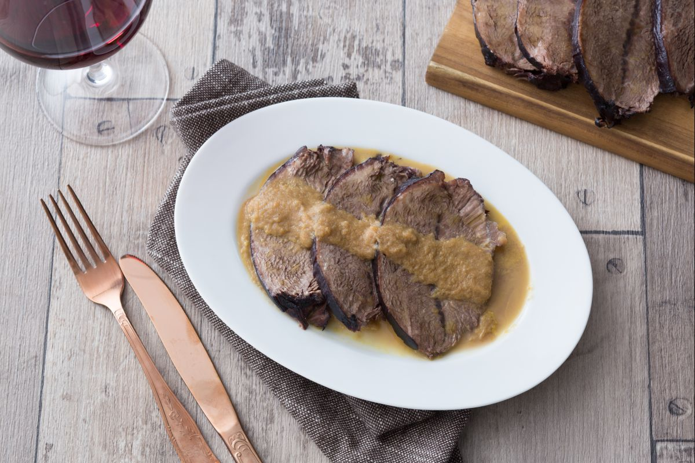

Tiramisù Recipe

Very popular after the first course prepared using the eponymous red wine from Piedmont. A rich and succulent recipe to be made and given to guests during special occasions, and why not, even for the Christmas holidays.
Ingredients
- Beef 2 ¼ lbs (1 kg) - chuck shoulder
- Carrots 0.35 lb (160 g) - (about 2 average)
- Yellow onions 0.4 lb (180 g) - (about 1 large)
- Rosemary 1 sprig
- Cloves 3
- Cinnamon sticks 1
- Extra virgin olive oil ¼ cup (50 g)
- Barolo wine 3.17 cups (750 ml) - (1 bottle)
- Celery ¼ lb (100 g) - (about 2 average ribs)
- Garlic 1 clove
- Bay leaves 2 leaves
- Ground black pepper 4
- Butter 1 tbsp (15 g)
- Fine salt to taste
Preparation
- To prepare the braised meat with Barolo, start by making a seasoning bag. Put the cloves, peppercorns and cinnamon in a piece of sterile gauze. Close and tie off with kitchen string. Then also tie rosemary and bay leaves and movo on to the vegetables.
- Clean the celery, carrot and onion, cut into 3/4 - 1" (2-3) cm thick chunks, then clean the garlic clove. Put the meat, vegetables, the bag and the seasonings into a large bowl. Then cover everything with wine with the meat is completely covered.
- Then cover with transparent wrap and let marinate in the fridge for at least 8-12 hours. After the time has passed, drain everything without throwing away the base. Take out the meat and place it on the cutting board, dry it with absorbent paper.
- In a frying pan, melt the butter in the oil over medium heat. As soon as the base is hot, add the meat and brown over a high heat. Turn it on all sides so that a crust forms on the surface.
- After a few minutes transfer the meat and its base into a large saucepan, heat for a moment over medium heat and add the drained vegetables and let them season over a lower heat for about 15 minutes.
- At this point you can add salt and cover up to half of the meat with the marinade. Bring to a boil and then close with a lid, lower the flame a bit and let it simmer for 1 hour. After the time has passed, turn over and, only if it is needed, add a little more marinade liquid. Continue cooking for another hour. Once the braised meat is cooked, take it out of the pot and put it aside on a plate covered with a lid. Remove the seasonings.
- Before blending the vegetables and the base of the cooking liquid with an immersion mixer, you can collect some liquid and keep it aside. This way you can add to it if needed to obtain the desired consistency. In the meantime, slice the meat, to obtain 2-3 slices per person and place on a serving plate; dab the slices with the sauce. Your braised beef with Barolo wine is ready, enjoy!